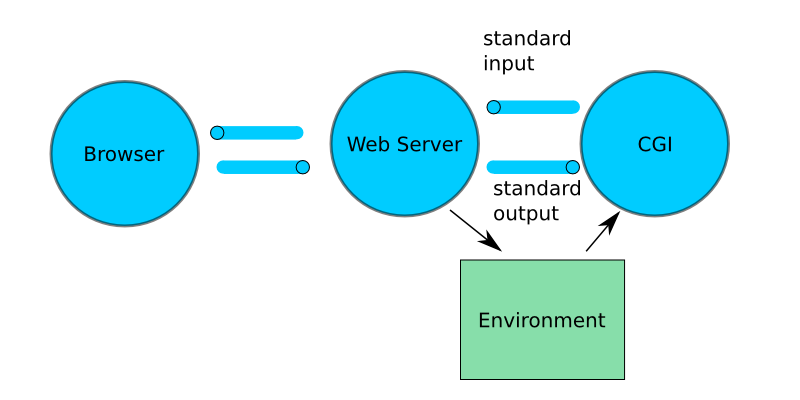

Content-Type: text/plain hello
Common Gateway Interface (CGI) is an specification of how a web server can interface with an external program that is responsible for dynamically generating a web page or web content. Input to the CGI script is provided through environment variables and the standard input. The program's output should contain a content header specifying the MIME type of the rest of the output.

CGI scripts provided the first way of generating dynamic web pages.
In windows, MAC/OS, and unix systems information is passed to a process through a set of environment variables. For example, the PATH used by the command line interpreter specifies the directories to search for a command. The behaviour of many programs are affected by the environment variables. The java interpreter uses the CLASSPATH variable to control the directories and jar/zip files that are searched for class files when running a java program.
The java.lang.System class provides
the getenv static method to access
a process's environment.
The entire environment can be accessed with the
static Map<String,String> getenv() method.
The environment of a Java program, or any program, can be printed with:
import java.util.Map;
import java.util.Set;
public class PrintEnv {
public static void main( String[] args ) {
Map<String,String> env = System.getenv();
// Since the keys in the map must be unique,
// they can be represented by a set
Set<String> set = env.keySet();
// iterate of the set and example the value
for ( String n : set ) {
System.out.println( n + "=" + env.get(n) );
}
}
}
There are more environment variables.
The script's output must contain a header and then the content. The header consists of name/value pairs that provide information about the content. Each pair must appear on a separate line terminated by '\r\n'. The content and header are separated by '\r\n'.
A minimal message could contain:
Content-Type: text/plain hello
The following Java program is a CGI script that outputs the most important environment variables passed to the script.
public class EchoEnv {
public static void main( String[] args ) {
System.out.print("Content-Type: text/plain\r\n\r\n");
System.out.println("server name = " + System.getenv("SERVER_NAME"));
System.out.println("server port = " + System.getenv("SERVER_PORT"));
System.out.println("method = " + System.getenv("REQUEST_METHOD"));
System.out.println("query = " + System.getenv("QUERY_STRING"));
System.out.println("info = " + System.getenv("PATH_INFO"));
System.out.println("script = " + System.getenv("SCRIPT_NAME"));
System.out.println("addr = " + System.getenv("REMOTE_ADDR"));
System.out.println("user = " + System.getenv("HTTP_USER_AGENT"));
System.out.println("type = " + System.getenv("CONTENT_TYPE"));
System.out.println("length = " + System.getenv("CONTENT_LENGTH"));
}
}
All CGI scripts must output a header line that specifies the MIME type of the generated page. This is done with:
System.out.print("Content-Type: text/plain\r\n\r\n");
The following shell script executes the EchoEnv Java program.
#!/bin/sh
BASEDIR=$(dirname $0)
exec java -cp $BASEDIR EchoEnv
The Java program that generates the link page for an old assignment where the student number is 123 is:
import java.util.Random;
public class GenerateTestPage {
private static long parseStudentId( String query )
throws NumberFormatException, IllegalArgumentException
{
String [] params = query.split("&");
for( int i = 0 ; i < params.length; i++ ) {
String [] words = params[i].split("=");
if ( words.length != 2 ) continue;
if ( words[0].equals("student") ) {
return Long.parseLong( words[1] );
}
}
throw new IllegalArgumentException("missing student param");
}
private static final int MAX_LIST = 10;
private static final int MAX_SEED = 1000;
private static String genseq = "genseq.sh";
private static int[] generateList() {
int[] seeds = new int[MAX_LIST];
Random rd = new Random();
System.out.println("<ol>");
for( int i = 0 ; i < seeds.length; i++ ) {
seeds[i] = rd.nextInt( MAX_SEED );
String url = genseq + "?seed=" + seeds[i];
System.out.println("<li>");
System.out.print("<a href='" + url + "'>" );
System.out.println( seeds[i] + "</a>" );
System.out.println("</li>");
}
System.out.println("</ol>");
return seeds;
}
public static void main( String[] args ) {
long student;
TransactionLog log;
try {
student = parseStudentId( System.getenv("QUERY_STRING") );
log = new TransactionLog( "transaction.log" );
log.record("test: " + student );
}
catch( Exception ex ) {
System.out.print("Content-Type: text/plain\r\n\r\n");
System.out.println(ex.getMessage() );
return;
}
System.out.print("Content-Type: text/html\r\n\r\n");
System.out.println("<html><head></head><body>" );
int[] seeds;
try {
seeds = generateList();
StringBuffer sb = new StringBuffer();
sb.append( "sum: " + student);
for( int i = 0 ; i < seeds.length; i++ ) {
sb.append( " " + seeds[i] );
}
log.record( sb.toString() );
log.close();
}
catch( Exception ex ) {
// ignore error, XXX
}
finally {
System.out.println("</body></html>" );
}
}
}
The Java program that generates the integer sequence page for an old assignment 3 is:
import java.util.Random;
public class GenerateRandomSequence {
private static int parseSeed( String query )
throws NumberFormatException, IllegalArgumentException
{
String [] params = query.split("&");
for( int i = 0 ; i < params.length; i++ ) {
String [] words = params[i].split("=");
if ( words.length != 2 ) continue;
if ( words[0].equals("seed") ) {
return Integer.parseInt( words[1] );
}
}
throw new IllegalArgumentException("missing seed param");
}
private static final int MAX_SEQUENCE = 20;
private static final int MAX_NUMBER = 100;
public static void main( String[] args ) {
System.out.print("Content-Type: text/plain\r\n\r\n");
int seed;
try {
seed = parseSeed( System.getenv("QUERY_STRING") );
}
catch( Exception ex ) {
System.out.println(ex.getMessage() );
return;
}
Random seq = new Random( seed );
for( int i = 0 ; i < MAX_SEQUENCE; i++ ) {
System.out.println( seq.nextInt( MAX_NUMBER ) );
}
}
}
The two previous CGI scripts use TransactionLog
to log information about the requests.
import java.io.IOException;
import java.io.OutputStreamWriter;
import java.io.FileOutputStream;
import java.io.PrintWriter;
import java.io.File;
import java.nio.channels.FileChannel;
import java.nio.channels.FileLock;
public class TransactionLog {
private FileOutputStream fout;
private FileChannel channel;
public TransactionLog( String filename ) throws IOException {
File file = new File( filename );
// open log file for append only
fout = new FileOutputStream(file, true);
channel = fout.getChannel();
}
public void record( String transaction ) throws IOException {
// lock file when saving transaction
FileLock lock = channel.lock();
try {
PrintWriter pw =
new PrintWriter(new OutputStreamWriter(fout) );
pw.println( transaction );
pw.flush();
}
finally {
lock.release();
}
}
public void close() throws IOException {
fout.close();
}
}
Most web servers allow the concurrent executions of CGI scripts. File locking is necessary to ensure that concurrent access to the log file does not corrupt the file's contents. Once a file is locked by one process, any other process that attempts to lock a file will be blocked, until the first lock is released.
The report.sh CGI script saves the reported sum
using TransactionLog. The code is:
public class ReportSum {
private static long[] parseParams( String query )
throws NumberFormatException, IllegalArgumentException
{
long[] result = new long[2];
String [] params = query.split("&");
for( int i = 0 ; i < params.length; i++ ) {
String [] words = params[i].split("=");
if ( words.length != 2 ) continue;
if ( words[0].equals("student") ) {
result[0] = Long.parseLong( words[1] );
}
else if ( words[0].equals("sum") ) {
result[1] = Long.parseLong( words[1] );
}
else {
throw new IllegalArgumentException("unknown param");
}
}
return result;
}
public static void main( String[] args ) {
long[] params;
TransactionLog log;
try {
params = parseParams( System.getenv("QUERY_STRING") );
log = new TransactionLog( "transaction.log" );
String remote = System.getenv("REMOTE_ADDR");
if ( remote == null ) remote = "";
log.record("result: " + params[0] + " " + params[1] + " " + remote);
}
catch( Exception ex ) {
System.out.print("Content-Type: text/plain\r\n\r\n");
System.out.println(ex.getMessage() );
return;
}
System.out.print("Content-Type: text/plain\r\n\r\n");
System.out.print("The " + params[1] + " for " + params[0] );
System.out.println(" has been recorded" );
}
}
Acesses to web servers is provided by the URL and
URLConnection classes defined in the
java.net package.
The URLConnection class implements the client-side
of the HTTP protocol. These classes can be used to retrieve
the documents provided by a web server. The Wget
program outputs the returned document from the argument URL.
The code is:
import java.net.URLConnection;
import java.net.URL;
import java.io.InputStreamReader;
public class Wget {
public static void main( String[] args ) throws Exception {
URL url = new URL(args[0]);
URLConnection conn = url.openConnection();
conn.connect();
InputStreamReader content =
new InputStreamReader( conn.getInputStream() );
int ch;
while( (ch=content.read()) != -1 ) {
System.out.print( (char)ch );
}
}
}
The output of the genseq CGI can be viewed with the command:
java Wget http://www.cs.mun.ca/cgi-bin/user-cgi/~rod/3715-a3/gentest.sh?student=123
The RunCgi provides a test harness
for CGI scripts by executing the CGI script in the
same way that a web server executes the script.
The code for RunCgi is:
import java.util.Map;
import java.io.InputStreamReader;
import java.io.InputStream;
import java.io.File;
import java.io.FileOutputStream;
public class RunCgi {
public static void main( String[] args ) throws Exception {
ProcessBuilder pb = new ProcessBuilder("/bin/sh", "gentest.sh" );
pb.directory( new File(".") );
Map<String, String> env = pb.environment();
env.clear();
env.put( "QUERY_STRING", "student=123" );
Process p = pb.start();
InputStream instream = p.getInputStream();
FileOutputStream save = new FileOutputStream("result.txt");
int ch;
while( (ch=instream.read()) != -1 ) {
save.write( (byte)ch );
}
save.close();
}
}
If enabled, a CS student creates and executes a cgi script by:
~/.cgi-bin directory.
0700 with
chmod 0700 ~/.cgi-bin.
0700
premissions in the above directory.
http://www.cs.mun.ca/cgi-bin/user-cgi/~user/executablewhere
user is the user's login name,
and executable is the path to
the cgi-script contained in ~/.cgi-bin.
PHP and html can be placed in .www. A PHP script ends with .php.